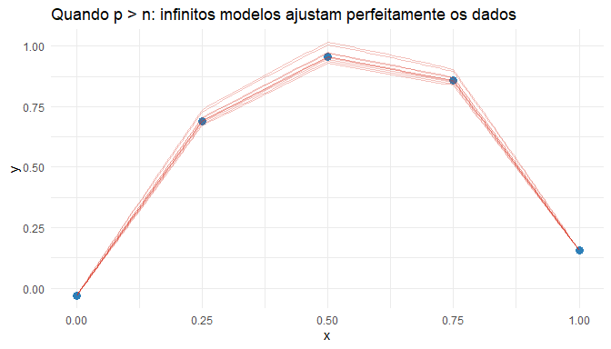

Parte I : Regressão
Métodos Paramétricos
Métodos paramétricos
Métodos paramétricos assumem que a função de regressão pode ser descrita por um número finito de parâmetros.
Aqui, iremos nos concentrar em modelos de regressão linear.
- Grande parte do conteúdo pode parecer familiar;
- porém, será apresentado sob a perspectiva de modelagem preditiva e seleção de modelos.
Regressão linear
Na regressão linear, a função de predição possui forma linear nos parâmetros.
A função de predição pode ser escrita como
\[ g(\mathbf{x}) = \boldsymbol{\beta}^t \mathbf{x} \]
ou explicitamente
\[ g(\mathbf{x}) = \beta_0 x_0 + \beta_1 x_1 + \cdots + \beta_p x_p \] Adotamos a convenção \(x_0 = 1\). Assim, \(\beta_0\) corresponde ao intercepto do modelo.
O vetor de parâmetros é
\[ \boldsymbol{\beta}^t = (\beta_0, \beta_1, \ldots, \beta_p) \]
Transformações de variáveis
Os termos \(x_i\) não precisam ser apenas as variáveis originais. Podemos construir novas covariáveis a partir delas, por exemplo:
- termos quadráticos: \(X_i^2\)
- interações: \(X_i X_j\)
- transformações não lineares
Isso permite que modelos lineares representem relações não lineares nos dados.
O Método dos Mínimos Quadrados
Uma forma de estimar os coeficientes \(\beta\) da regressão linear é utilizar o método dos mínimos quadrados.
A ideia é escolher os coeficientes que minimizam a soma dos erros quadráticos:
\[ \hat{\boldsymbol{\beta}} = \arg\min_{\beta} \sum_{i=1}^{n} \left( Y_i - \beta_0 - \beta_1 x_{i1} - \cdots - \beta_d x_{ip} \right)^2 \]
Interpretação
O método escolhe os parâmetros que minimizam a soma dos quadrados dos resíduos:
\[ \text{resíduo}_i = Y_i - g(X_i) \]
Logo, o objetivo é minimizar
\[ \sum_{i=1}^{n} (Y_i - g(X_i))^2 \]
Geometricamente, isso corresponde a ajustar o hiperplano que fica mais próximo possível dos dados.
Forma matricial do modelo
O modelo de regressão pode ser escrito em forma matricial como
\[ \boldsymbol{y} = \boldsymbol{X} \boldsymbol{\beta} + \boldsymbol{\varepsilon} \]
onde
- \(\boldsymbol{y}\) é o vetor de respostas
- \(\boldsymbol{X}\) é a matriz de covariáveis
- \(\boldsymbol{\beta}\) é o vetor de parâmetros
Solução dos mínimos quadrados
A solução analítica do problema é dada por
\[ \hat{\boldsymbol{\beta}} = (\boldsymbol{X}^t \boldsymbol{X})^{-1} \boldsymbol{X}^t \boldsymbol{y} \]
Essa expressão é conhecida como a equação normal da regressão linear.
Estrutura da matriz de dados
A matriz de covariáveis possui a forma
\[ \boldsymbol{X} = \begin{pmatrix} x_{1,0} & x_{1,1} & \cdots & x_{1,p} \\ x_{2,0} & x_{2,1} & \cdots & x_{2,p} \\ \vdots & \vdots & \ddots & \vdots \\ x_{n,0} & x_{n,1} & \cdots & x_{n,p} \end{pmatrix} \]
e o vetor resposta é
\[ \boldsymbol{y} = \begin{pmatrix} Y_1 \\ Y_2 \\ \vdots \\ Y_n \end{pmatrix} \]
Adotamos a convenção \(x_{i,0} = 1\) para representar o intercepto do modelo.
Função de regressão estimada
Uma vez estimados os coeficientes pelo método dos mínimos quadrados, a função de predição é dada por
\[ g(\mathbf{x}) = \hat{\boldsymbol{\beta}}^t \mathbf{x} \]
Assim, para um novo vetor de covariáveis \(\mathbf{x}\), a previsão é
\[ \hat{\boldsymbol{y}} = g(\mathbf{x}) \]
Justificativa estatística do método
Grande parte da literatura estatística estuda o método dos mínimos quadrados sob diferentes perspectivas, como:
- máxima verossimilhança;
- testes de hipóteses para os coeficientes \(\beta_i\);
- intervalos de confiança para os parâmetros.
Esses tópicos são tratados em profundidade em livros clássicos como:
Uma observação importante
Assumir que a verdadeira função de regressão \(r(x)\) é exatamente linear é uma suposição bastante forte.
Na prática, essa hipótese raramente é verdadeira.
Mesmo assim, existe uma literatura extensa mostrando que o método dos mínimos quadrados continua sendo útil para estimar relações entre \(\boldsymbol{X}\) e \(\boldsymbol{y}\), mesmo quando a verdadeira função de regressão não é linear.
Quando a suposição de linearidade falha
A suposição de que a verdadeira função de regressão
\[ r(\mathbf{x}) = E[\boldsymbol{y} \mid \boldsymbol{X}=\mathbf{x}] \]
é linear muitas vezes não é válida na prática.
Mesmo assim, modelos lineares frequentemente apresentam bom desempenho preditivo.
Ideia central
Mesmo quando \(r(\mathbf{x})\) não é linear, frequentemente existe um vetor \(\boldsymbol{\beta}_*\) tal que o preditor linear
\[ g_{\boldsymbol{\beta}_*}(\mathbf{x}) = \boldsymbol{\beta}_*^t \mathbf{x} \]
possui bom poder preditivo.
O melhor preditor linear
O vetor \(\boldsymbol{\beta}_*\) é definido como aquele que minimiza o risco quadrático:
\[ \boldsymbol{\beta}_* = \arg\min_{\boldsymbol{\beta}} R(g_{\boldsymbol{\beta}}) = \arg\min_{\boldsymbol{\beta}} E[(\boldsymbol{y} - \boldsymbol{\beta}^t \mathbf{x})^2] \]
Esse vetor define a melhor aproximação linear da relação entre \(\mathbf{x}\) e \(\boldsymbol{y}\).
\(\boldsymbol{\beta}_*\) é chamado de oráculo.
Interpretação
Mesmo quando o verdadeiro modelo \(r(x)\) não é linear, o método dos mínimos quadrados estima o melhor preditor linear possível.
Ou seja, ele encontra a função linear que minimiza o erro quadrático médio esperado.
Consequência importante
Quando o tamanho da amostra cresce,
\[ \hat{\boldsymbol{\beta}} \rightarrow \boldsymbol{\beta}_* \]
Ou seja, o estimador obtido pelos mínimos quadrados converge para o melhor preditor linear, mesmo que o modelo esteja mal especificado.
Mínimos quadrados não precisa que o modelo seja verdadeiro.
Ele encontra a melhor aproximação linear da realidade.
Limitações do método dos mínimos quadrados
Quando o número de covariáveis é muito grande, o método dos mínimos quadrados pode apresentar desempenho ruim.
Isso ocorre principalmente por dois motivos:
-
super-ajuste (overfitting)
- alta variância do estimador
Problema em alta dimensão
Considere:
-
\(p\) = número de covariáveis
- \(n\) = tamanho da amostra
Quando \(p > n\) o estimador de mínimos quadrados não está bem definido.
Por quê?
A solução dos mínimos quadrados é
\[ \hat{\boldsymbol{\beta}} = (\boldsymbol{X}^t \boldsymbol{X})^{-1} \boldsymbol{X}^t \boldsymbol{y} \]
Porém, quando \(p > n\), \(\boldsymbol{X}^t \boldsymbol{X}\) não é invertível.
Logo, o estimador não pode ser calculado diretamente.
Consequência
Em problemas com muitas variáveis (alta dimensão):
- o método clássico de mínimos quadrados não funciona bem
- precisamos utilizar métodos alternativos
Por exemplo:
- regularização (Ridge, Lasso)
- redução de dimensionalidade
- seleção de variáveis
Interpretação
Quando temos mais parâmetros do que observações, o modelo tem liberdade suficiente para passar exatamente por todos os pontos.
O problema é que existem infinitas funções que fazem isso, e elas podem ser completamente diferentes fora da amostra.
References
Morettin, Pedro A., and Julio M. Singer. 2019. Estatística e Ciência de Dados. Rio de Janeiro: LTC.
Neter, John, Michael H. Kutner, Christopher J. Nachtsheim, and William Wasserman. 1996. Applied Linear Statistical Models. 4th ed. Chicago: Irwin.